Hundreds of sim-to-real rounds.
RL locomotion and whole-body tracking at Dexmate.
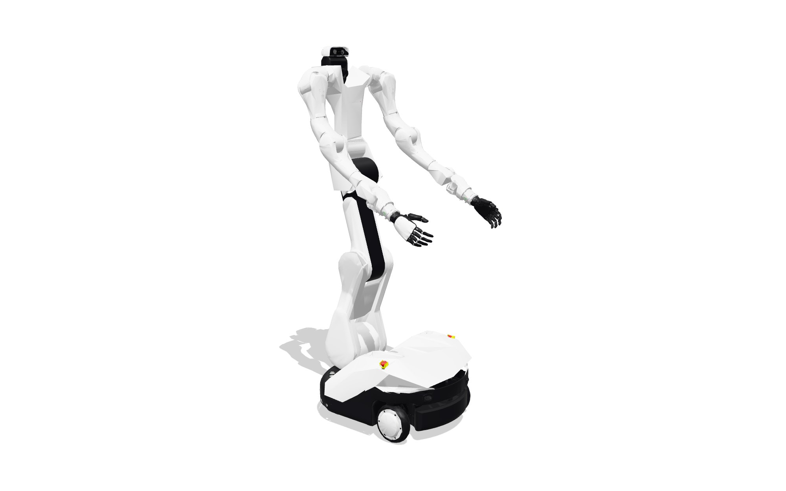
Robotics Software Engineer
3+ years taking humanoids, quadrupeds, cobots and AGVs from simulation to real hardware.
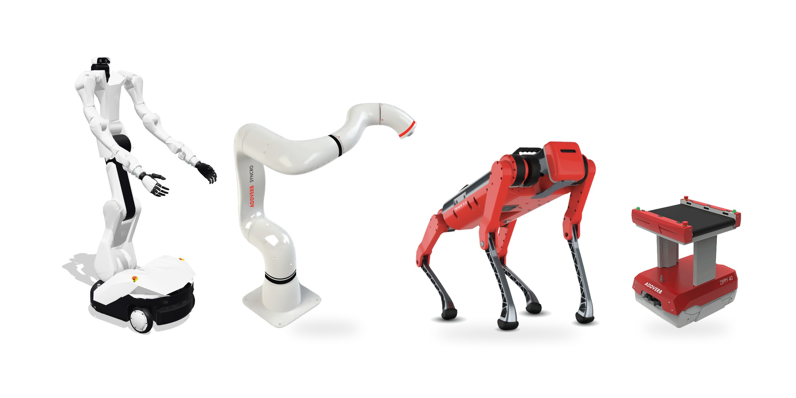

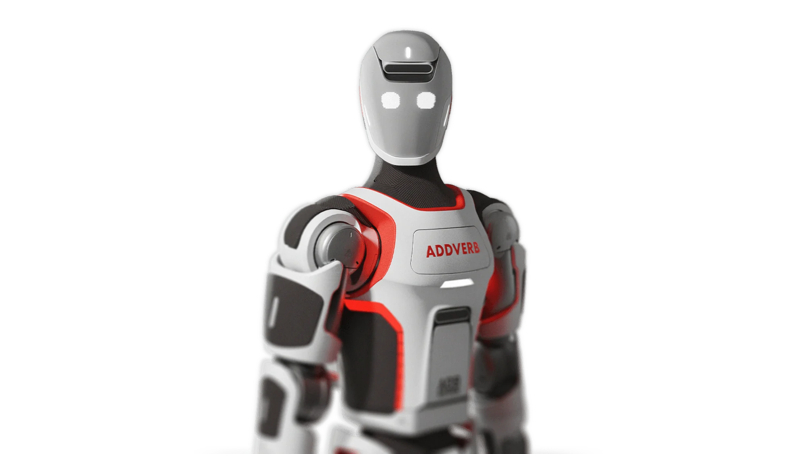
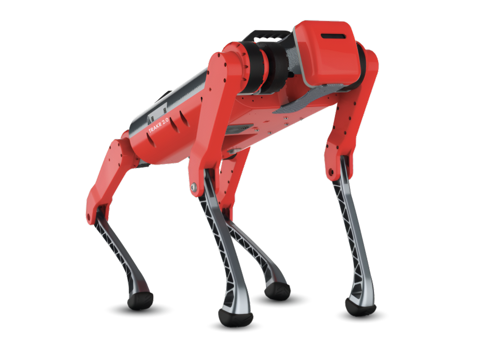
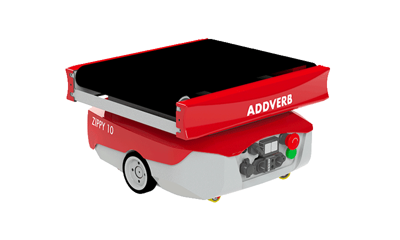
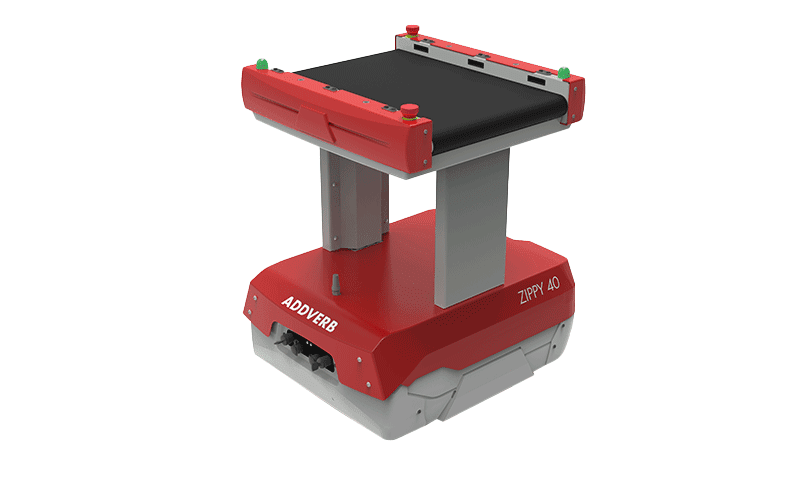
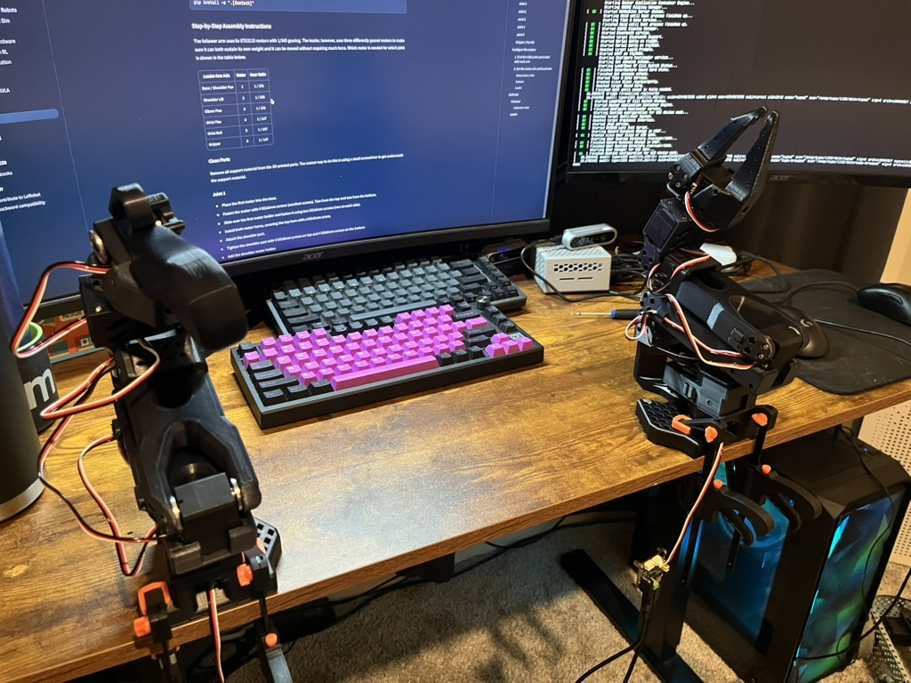
About
I’ve studied robotics since day one of college. For 3+ years I’ve taken humanoids, quadrupeds, cobots and AGVs from simulation to real hardware, focused on RL locomotion, whole-body tracking and model-based control.
I hold a Master’s in Electrical Engineering and Computer Sciences (EECS), Robotics track, from UC Berkeley, and a Bachelor’s in Robotics from Southeast University.
I’m passionate about building intelligent robotic systems that operate reliably in dynamic, real-world environments.
Studied, worked and built at
Dexmate · Legged humanoid
At Dexmate, I train RL locomotion policies for a legged humanoid in Isaac Sim and deploy them sim-to-real, over hundreds of rounds of hardware testing.
Policies trained in Isaac Sim and deployed on hardware, plus perceptive locomotion.
Policies trained on retargeted human motion, both skill-specific and general-purpose.
I own the in-house overhead safety-crane system that protects the humanoid during hardware testing.
Dexmate · Wheeled humanoid
I built Vega’s simulation pipelines in MuJoCo and Isaac Sim, and fixed issues in the public Vega URDF. With NVIDIA’s robotics team, I worked on system identification of Vega’s actuators in Isaac Sim/Lab.
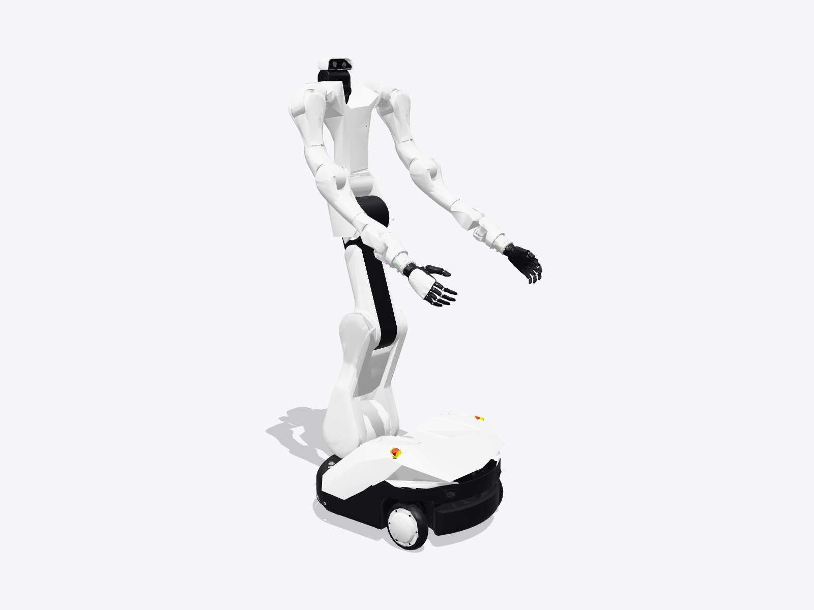
Addverb · Humanoid
I built the humanoid’s MuJoCo simulation and sim-to-sim pipeline, and its RL pipeline in MuJoCo Playground and Isaac Sim/Lab. I trained a velocity-tracking locomotion policy in Isaac Gym and deployed it on the real robot.
Addverb · Quadruped
I modeled Trakr and built its simulation pipelines in MuJoCo and Isaac Sim, then developed a WBC + MPC framework for motion planning and control, the low-level joint impedance controller, and an EKF state estimator fusing IMU and joint-encoder data. I also trained a ladder-climbing RL policy in Isaac Gym and deployed it on hardware.
Addverb · Cobot
I developed MPC for the Syncro cobot with OCS2 and Pinocchio, and built its Isaac Sim pipeline for vision-language-action (VLA) model development. I created, and maintain, the USD models of two cobots in NVIDIA’s official Isaac Sim robot asset library.
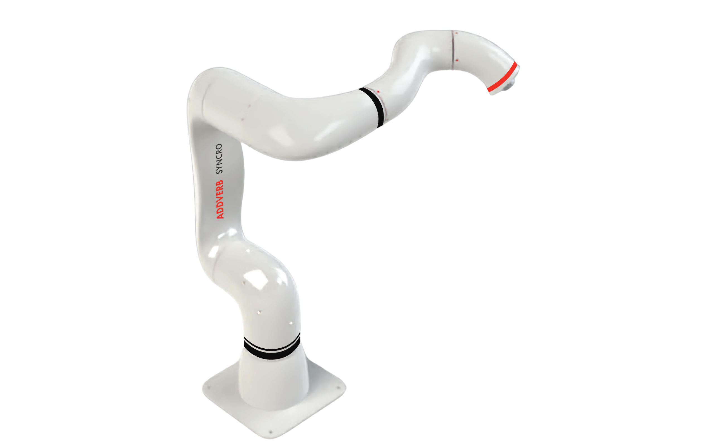
Addverb · AGV
I rewrote Zippy’s ROS stack as a multithreaded pure-C++ stack, built a control pipeline for curved trajectories at 90° turns, and implemented a new EKF fusing wheel odometry and IMU data for more robust localization. CPU usage on production platforms fell from 72% to 13%, and turn time by a third.
CPU usage on production platforms, down from 72% before the rewrite.
turn time at 90° turns.
subsystems brought into the rewritten C++ stack.
algorithms prototyped in MATLAB/Simulink before they reached the robot.
voice software for managing the robot fleet, built with Intel and Supermicro.
See the Intel postRobot deployment and customer support
On-site work with Addverb’s customers, backed by extensive hands-on robot experience.
Addverb ×
AGVs at a New Jersey site, deployed from scratch.
Read on LinkedInAddverb ×
robots set up: 2 AMRs and 1 Multi-Carton Picking Robot.
Addverb ×
AGVs in a deployment I supported on software.
Live URDF models, in your browser. Drag to orbit, scroll or pinch to zoom.
Dexmate’s wheeled humanoid. From dexmate-ai/dexmate-urdf.
Addverb’s humanoid. From HumanoidAddverb/elix_gym.
Addverb’s quadruped. From HumanoidAddverb/trakr_legged_rl.
Addverb’s collaborative arm. From HumanoidAddverb/pyroki_framework.
The LeRobot arm I build at home. From TheRobotStudio/SO-ARM100.
Elephant Robotics’ myCobot 280. From elephantrobotics/mycobot_ros.
TurtleBot3 Burger. From ROBOTIS-GIT/turtlebot3.
Loading the 3D viewer
2026 · Dexmate, United States
DevelopmentView in 3D2025 · Addverb, United States
DevelopmentView in 3D2025 · Addverb, United States
Development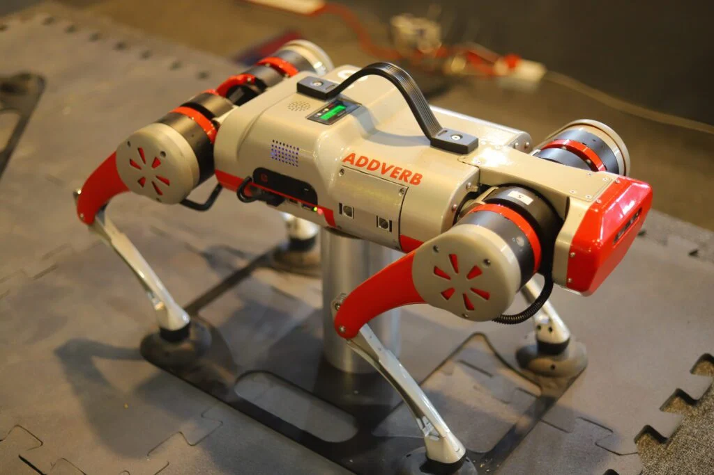
2024 – 2025 · Addverb, United States
DevelopmentView in 3D2024 – 2025 · Addverb × DHL and Addverb × DoorDash, United States
Deployment and supportWatch on YouTube2024 · Addverb, United States
DevelopmentView in 3D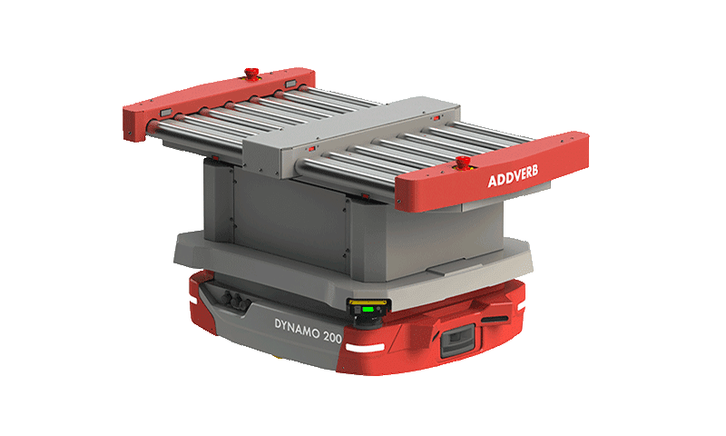
2024 · Addverb × Purdue University, United States
DeploymentWatch on YouTube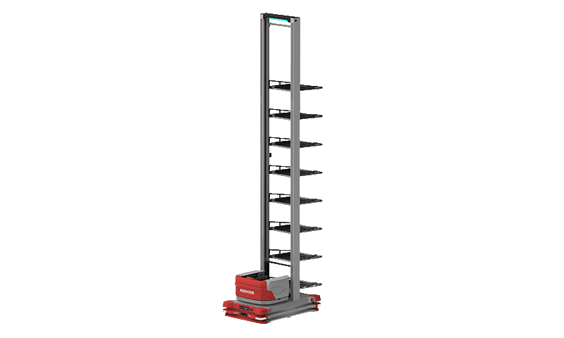
2024 · Addverb × Purdue University, United States
Deployment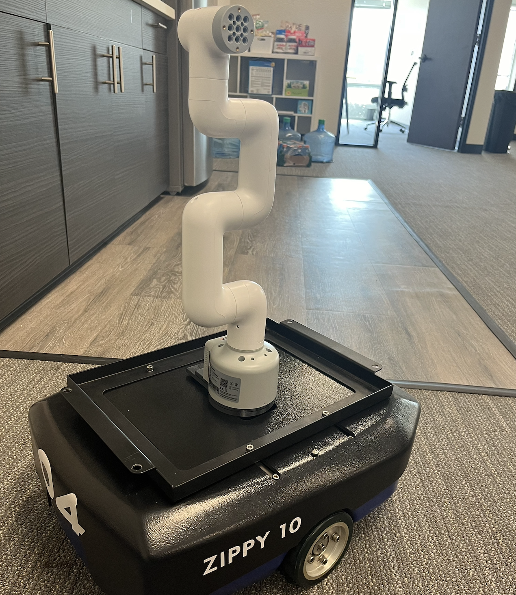
2024 · Addverb, United States
DevelopmentView in 3D2023 – 2024 · Addverb, United States
Development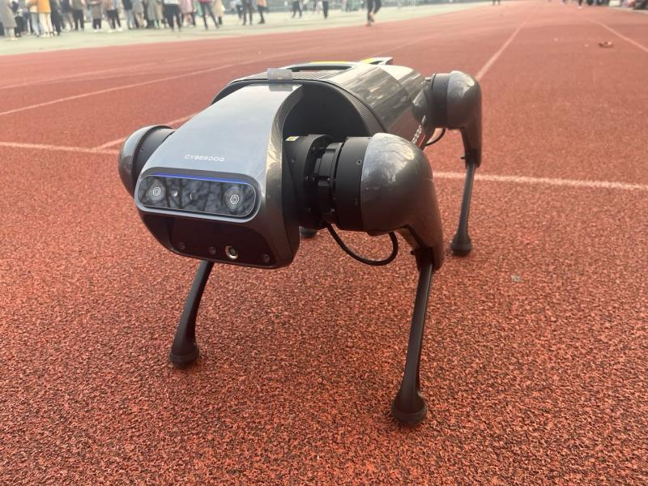
2022 · Southeast University, China
Development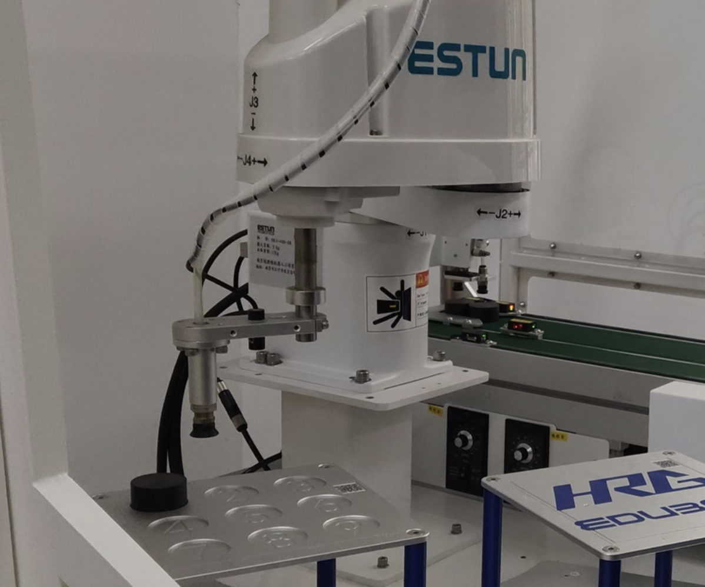
2022 · Southeast University, China
Development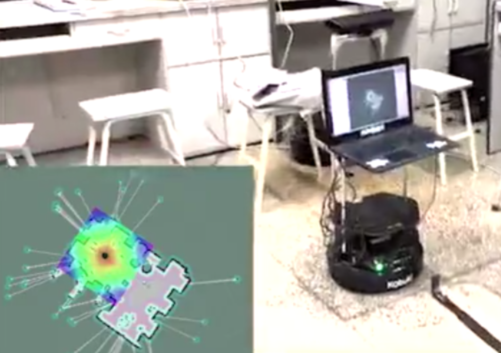
2021 – 2022 · Southeast University, China
DevelopmentView in 3D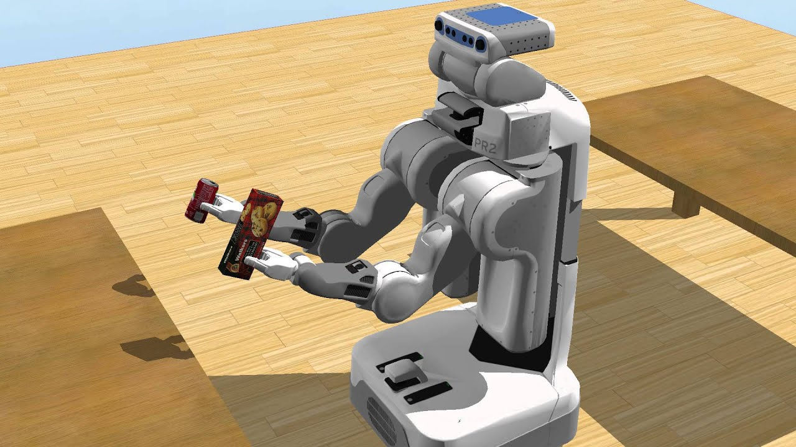
2021 · Southeast University, China
Development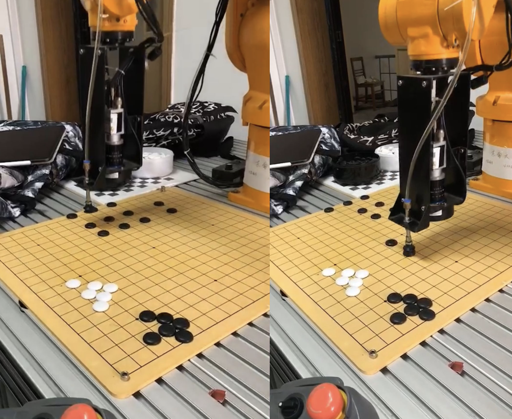
2021 · Southeast University, China
DevelopmentPersonal development
I build custom LeRobot robotic arms and explore advanced Vision-Language-Action (VLA) models for embodied AI. I also coach teams for VEX AI Robotics competitions.
2024 – 2025 · Robot arm
View in 3D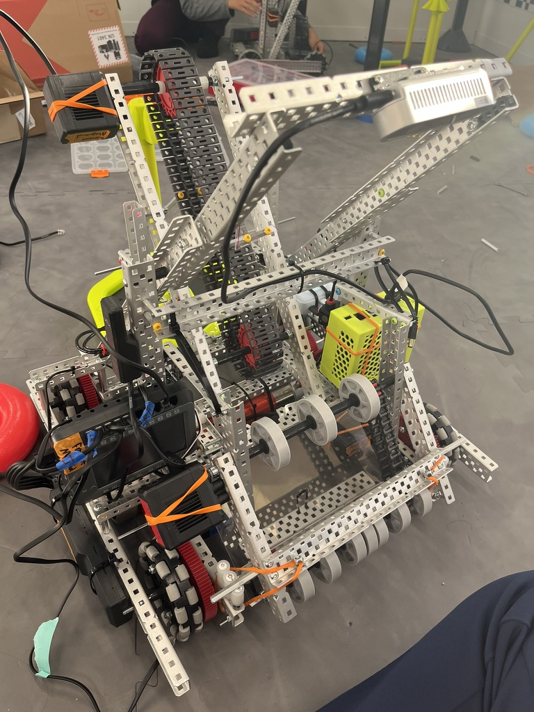
2024 – 2025 · Wheeled robot
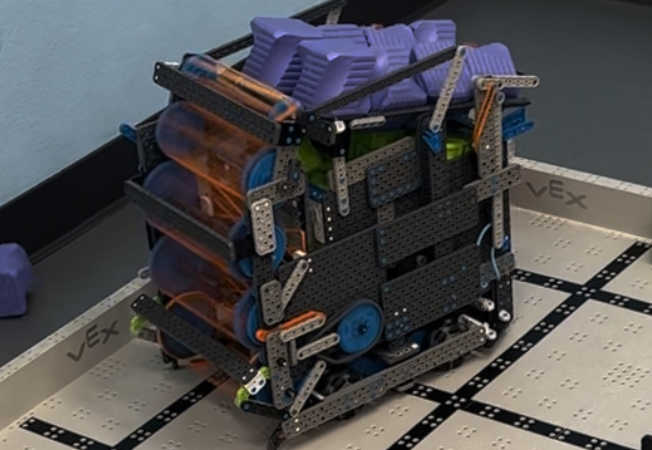
2024 · Wheeled robot
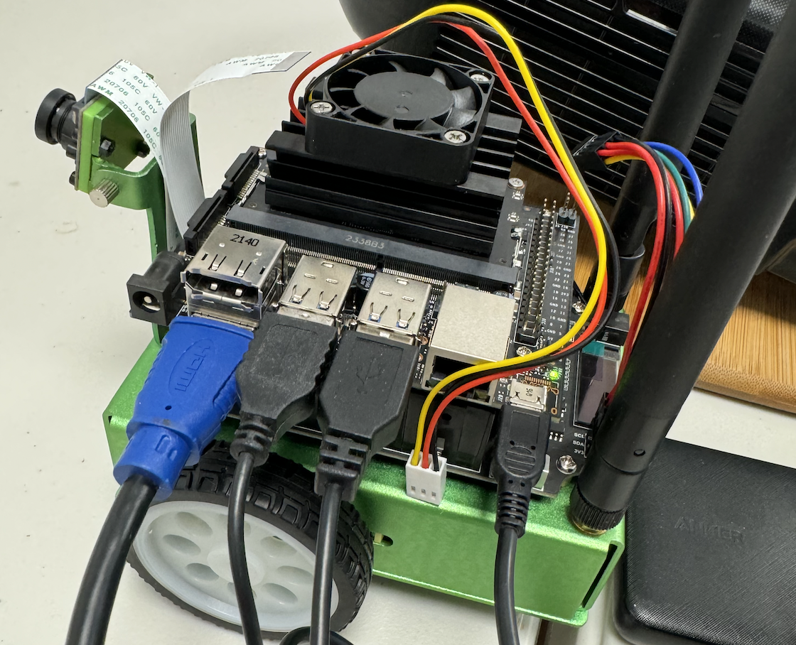
2023 · Wheeled robot
Resume
Dexmate Inc. · Fremont, CA
Legged humanoid · Vega wheeled humanoid
Addverb Technologies USA Inc. · Fremont, CA
Elixis humanoid · Trakr quadruped · Syncro cobot
Addverb Technologies USA Inc. · Fremont, CA
Zippy AGV · deployments for DoorDash and DHL
Jia Kang Zhong Zhi Technology Co., Ltd. · Internship
The Chinese University of Hong Kong, Shenzhen · Full-time

Aug 2022 – May 2023

Jul 2018 – Jul 2022
Contact
Robotics Software Engineer, Dexmate
Fremont, California, USA